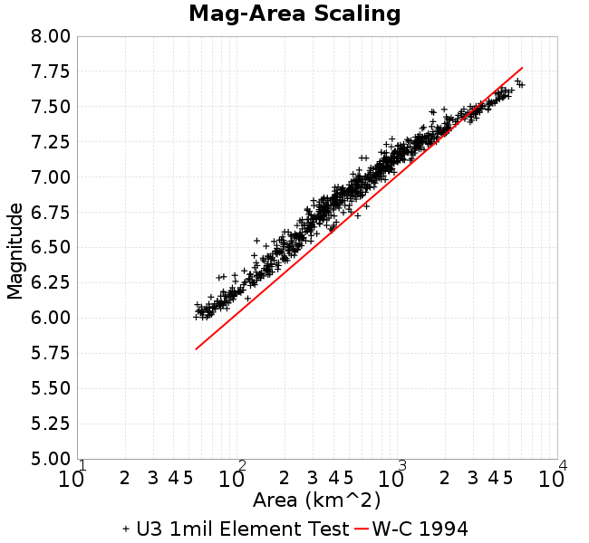
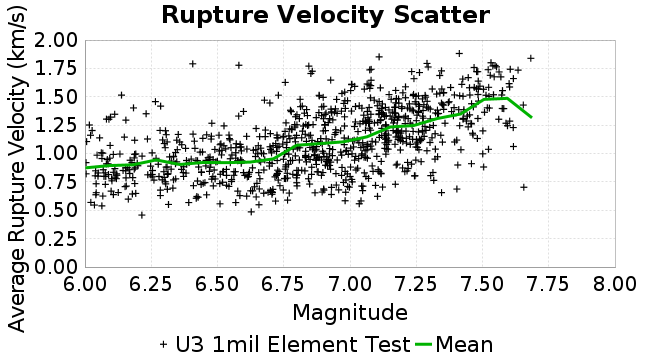

| Catalog | U3 1mil Element Test |
|---|---|
| Author | Jacqui Gilchrist, 2017/09/27 |
| Description | Test 1 million element catalog on UCERF3 fault system, ~0.25 km^2 trianglar elements |
| Fault/Def Model | Fault Model 3.1, Geologic |
| Slip Velocity | 1.0 m/s |
| Average Element Area | 0.23 km^2 |
| Length | 5,587,999 events in 7,481 years |
| Frictional Params | a=0.01, b=0.015, (b-a)=0.005, ddotEQ=1 |
| Scatter | 2-D Hist |
|---|---|
|  |  |
| Scatter |  |
|---|---|
| Distance/Velocity |  |
| M≥6 | M≥6.5 | M≥7 | M≥7.5 |
|---|---|---|---|
 |  |  |  |

A_1 = 0.010000000000000000208
fA = 0.10000000000000000555
B_1 = 0.014999999999999999445
Dc_1 = 1.0000000000000000818e-05
mu0_1 = 0.5999999999999999778
ddotStar_1 = 9.9999999999999995475e-07
ddotAB_1 = 9.9999999999999995475e-07
alpha_1 = 0.25
theta0_1 = 200000000
tau0_1 = 60
sigma0_1 = 100
sigmaFracPin = 0.1
maxThetaPin = 10000000000
ddotEQ_1 = 1
ddotEQFname =
stressOvershootFactor = 0.10000000000000000555
lameLambda = 30000
lameMu = 30000
slowSlip_1 = 0
nEq = 3e20
tStart = 0
maxT = 3e12
faultFname = UCERF3.D3.1.millionElements.flt
outFnameInfix = UCERF3.D3.1.millionElements1
writeTau = 0
writeSigma = 0
writeSlip = 0
writeSlipSpeed = 0
writeState = 0
writeTheta = 0
writePED = 1
writeTransitions = 1
minDtWrite = 3.15e10
minDtWriteCoseismic = 0
minDtWriteInterseismic = 0
minMagWrite = 7.77
writeStiffness = 0
stressRateSpecification = 1
dMu3 = 0.0010000000000000000208
initTauFname =
initSigmaFname =
initThetaFname =
initSlipSpeedFname =
AFname =
BFname =
DcFname =
mu0Fname =
ddotStarFname =
ddotABFname =
alphaFname =
KTauFname =
KSigmaFname =
tFailFname =
tauFailFname =
tauDotFname =
sigmaDotFname =
pinnedFname =
neighborFname = neighbors.12
stressRateFname =
slowSlipFname =
writePatchFname =
DEBUG = 1
ZBrentUpperBracket = 0
ZBrentTol = 9.9999999999999995475e-07
lowSigmaAction = 0
KZeroFrac = 0.0
KZeroFname = UCERF3.D3.1.millionElements.KZero0.8
slipInState1 = 1
resetStressingRates = 1